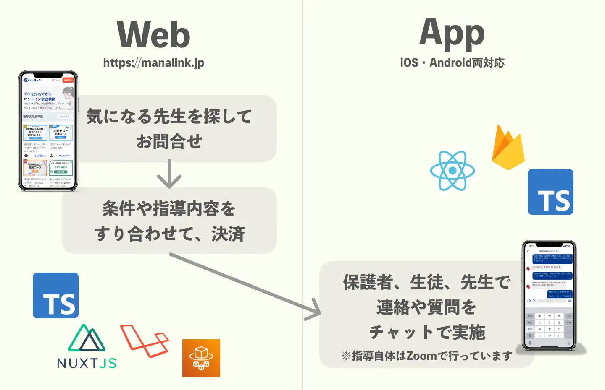

目次
- 自己紹介
- 開発しているサービス
- React Nativeの利用ライブラリ
- React Nativeの品質管理
- React Nativeの落とし穴
- Firebaseの利用ライブラリ
- Firebaseの品質管理
- Firebaseの落とし穴
- この技術選定で良かったと思うこと
- まとめ
自己紹介

- ハンドルネーム”名人”
- 株式会社NoSchool CTO
- オンライン家庭教師を広める教育サービス”マナリンク”を開発しています(https://manalink.jp)
- 好きな言語はTypeScript
- 好きなIDEはPHPStorm
- 趣味
- 将棋(指すのも観戦するのも好き)
- ゲーム(最近はゼルダ無双)
開発しているサービス

- マナリンク
- 中高生向けのオンライン家庭教師サービス
- Web上で先生を探して指導依頼
- 指導開始後はアプリを使ってご家庭↔先生でやり取り
図にするとこんな感じ
アプリで開発している機能
いま
- 先生、生徒、保護者が利用できる
- チャット(文章、画像、PDF、.docxなど)で連絡できる
- iOS / Android対応
- Web(Nuxt.js)↔アプリ間でもチャットができる
これから
- 先生が勉強計画を立て、日々生徒が報告する機能
- 試験日や指導日を共有できる管理機能
→先生個人が(塾などに属さなくても)デジタル化した指導を実践できるようにしていく
アプリの開発体制と利用技術


- 開発体制
- 業務委託エンジニア1名(+ときどきCTO)
- めっちゃベンチャーです
- 利用技術
- React Native
- Expo(Managed Workflow)
- Firebase
- TypeScript
React Nativeの利用ライブラリ
react-native-gifted-chat
<GiftedChat
messages={chatMessages}
onSend={onSend}
placeholder="メッセージを入力"
renderBubble={renderBubble}
renderInputToolbar={renderInputToolbar}
renderActions={renderActions}
renderComposer={renderComposer}
renderSend={renderSend}
renderMessageImage={renderMessageImage}
infiniteScroll
// 以下略
/>
- チャット画面を丸っと囲うGiftedChatコンポーネントを置くだけ
- 各メッセージや送信ボタンなどは外からFunctionalなComponentを渡すことでカスタマイズできる
- カスタマイズしすぎるとライブラリの範囲を逸脱してくるので、いつかはリプレイスする
チャットをゼロから作るのは割と大変

以下の内容はreact-native-gifted-chatがやっている
- チャットの吹き出しの形
- よく見ると、連投したときの角丸の形が微妙に違う
- 連投すると最後の投稿だけユーザーアイコンがつく
- 日時表示
- 日付が変わるたびに日付表示をインサートしている
- 表示位置
- 新着メッセージが来るたびに自動でスクロール
WebではVueで全部自作したけど結構大変だった(勉強にはなった)
これを機にLINEのUIをじっくり眺めるととても感心した思い出
Firebase×React Hooks関連のライブラリ
react-firebase-hooks
- https://github.com/CSFrequency/react-firebase-hooks
- FirestoreのCollectionデータ、読み込み中フラグ、エラー内容をセットで返すHook
const [values, loading, error] = useCollectionData<T>(query, options);
react-firebase-pagination-hooks
- チャットのメッセージをページングして、無限スクロールを実装
- loadMoreメソッドを実行すれば次のデータが読み込める
const [messages, { loaded, loadingMore, loadMore }, error] = usePaginationData<T>(query, options);
React Nativeの品質管理
- React Nativeに関してはテストコードは皆無(汗)
- 機能が少なく、ライブラリ依存が大きいため
- 毎回ウォークスルーテストを手動でしている
- 複雑なフックが増えてきたので書きたい気持ちはある
- エラー検知はSentry
- 画面遷移やメッセージ送信時などでイベントを発火して記録
- エラーログが出ると、イベントを辿ることでユーザーの動きを擬似再現できる
- ユーザーIDも紐付けができる
- ソースマップをSentryにデプロイすることで、エラーが起きたソースコードの該当箇所を特定しやすい
Sentry.addBreadcrumb({
category: 'ACTION',
message: 'SEND_CHAT_MESSAGE',
data: {
roomId: room.id,
userId: user.id,
},
});
React Nativeの落とし穴
ハマると解決が厳しい
- 某ライブラリと某ライブラリを併用し、かつ特定の動作をユーザーが行うとアプリがクラッシュする事案があった
- 画面が突然ブラックアウトして強制的に再起動になる
- 発動条件がニッチだが、本番環境で再現するユーザーがいて修正必須となった
- 直接的な原因が全く不明
- クラッシュが突然ブラックアウトするためエラーログが取れない
- ライブラリのソースを追っても、ある程度追うとネイティブのコードになり謎が深まる
結局何が原因か分からないままに、当該ライブラリの組み合わせを変えることで解消...
いつでもiOS/Androidで同じと思うなよ現象
- チャットで画像を送信するとき、画素数を落とさずにファイルサイズを小さくするために圧縮した
- expo-image-manipulatorのImageManipulator.manipulateAsyncで圧縮しようとすると、同じ圧縮率を指定してもAndroidから実行すると画像が圧縮されすぎてしまった
- OSごとに分岐して圧縮率を調整することで解消
- ソースレビューの段階では何ら問題なく見えるので恐ろしい
- 他にも通知周りなど、細かいところで結局OSごとに分岐する箇所があるので、両OSでの実機確認は必須
Firebaseの利用ライブラリ
firestore-simple
- Firestoreに対する形安全なDAOが手に入れられるライブラリ
const roomDao = firestoreSimple.collection<Room>({ path: 'rooms' })
const allRooms = await roomDao.fetchAll() // allRooms: Room[]
Firebaseの設計
Firestoreは書き込み処理に重点を置く
- SQLと違って読み取りクエリが貧弱
- 非正規化を許容して、読み取りの仕様に合わせて最適化したコレクションを作る
- 例：チャット部屋一覧で最新のメッセージを見せるために、messagesコレクションのonCreateでroomsコレクションに最新のメッセージを遅れて同期させる
- 例：全ての未読数の合計を出すために、messagesへのonWriteハンドラでユーザーごとに未読数を集計して別途保存する
Firebaseの品質管理
FunctionsでのエラーログをSlack通知
- https://zenn.dev/meijin/scraps/94d4a70eb77507
- Functionsでキャッチされなかった例外も含めSlack等でキャッチアップしたかった
- Cloud Functionsログ→GCP→ログルーター→PubSubトピック→Cloud Function→Slack通知
Firebaseの落とし穴
- FirebaseというかExpoの落とし穴だが、ExpoへのPush通知は割と高頻度(週に数回)で502エラーになる
- 400系なら分かるが、502ならどうしようもない
- Expoに問い合わせたが、リトライ処理を実装してくれ、とのこと
- メッセージのonCreateハンドラ→Notificationコレクションに書き込み→NotificationコレクションのonCreateハンドラでPush通知を飛ばし、失敗時は再度同じコレクションに書き込み、的な設計でリトライを実装した
React Nativeで良かったと思うこと
1. 簡単な修正ならWebエンジニア(僕)でも理解・実装できる
- そもそもReactが個人的に好き(突然の主観)
- 最近練習を兼ねてRNで個人開発しているが、TSXを書くのが楽しいしスタイルもCSS感覚なので敷居が本当に低い
- 特にExpoのManaged Workflowの場合は環境構築時に各OSの存在をほとんど意識しなくて良いので楽
- 実例として、FrontのFirebaseは全く同じライブラリをVueでも使っているので、Webのコードをほぼそのままコピペで持ってこれる
- 先日FirebaseのStorageにファイルを上げる時に、content-dispositionヘッダを指定することでダウンロード時にファイル名を維持する施策を実装したが、ほぼ同じコードでWeb/アプリを実装できたので便利さを実感した
2. 受験シーズンに間に合うように開発できた！
- 昨年6月から開発スタートし10月にリリース
- React Nativeで開発することで受験シーズンに間に合い、積極的に使ってもらうことができた
- ほぼチャット機能のみのシンプルなアプリでも好評だった
- 親・先生・生徒がやり取りでき、ファイルや画像も送れるのは当然に見えて、案外事業者側でそこまで内製する企業が少ないらしい
- 特に先生から好評をいただくことができた
- 教育事業が最も盛り上がる受験シーズンまでに、最低限どんな機能があればニーズが満たせるか理解できた
- スタートアップの検証サイクル的にはとても有り難い技術
- (初期リリースの内容を予定から絞って、チャットだけを作り込む判断も功を奏した)
まとめ
- React Nativeのチャット機能開発
- UIはreact-native-gifted-chatが便利
- データ読み込みはHooks関連のライブラリが便利
- エラー検知はSentryが便利
- Firebaseのチャット機能開発
- 読み取りの都合に合わせて非正規化や冗長性を許容する
- Cloud FunctionsのonWrite等を使って同期
- 開発体制を柔軟に決められる技術スタックなので大変助かっている